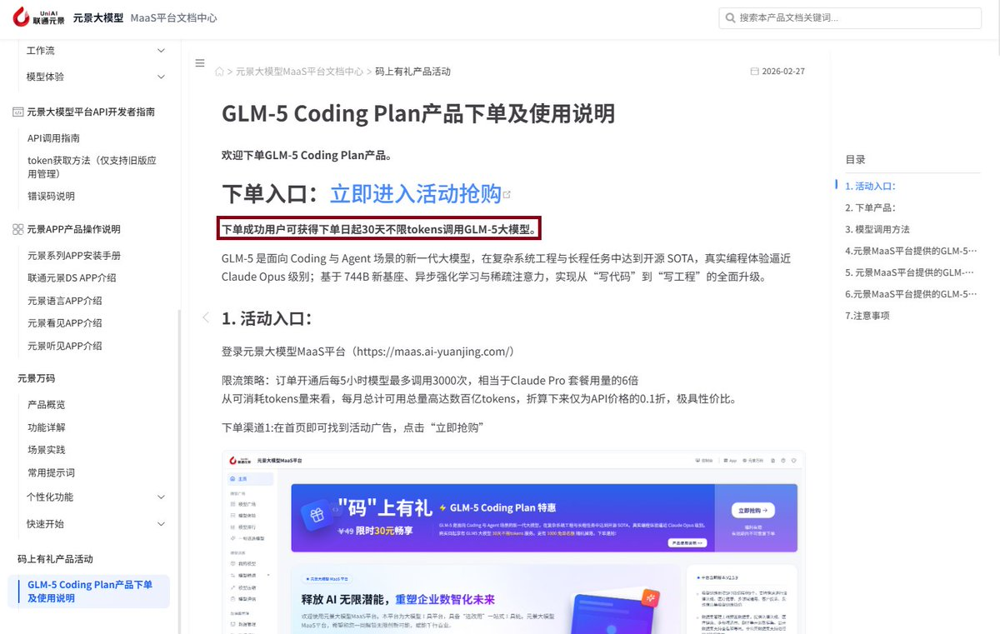
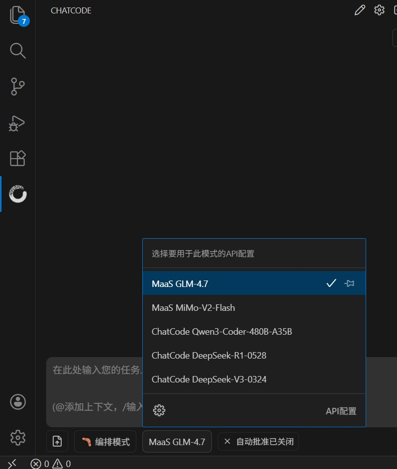

联通元景MaaS平台GLM-5套餐实测是超大杯！GLM-5 Coding Plan产品下单成功用户可获得下单日起30天不限tokens调用GLM-5大模型，质量感觉比最近官方的降智减速PRO好不少！
实测最大速度约为30token/s，最慢速度大1.9token/s。可能是优化或者是并发问题，速度比老黄快多了，不是很稳定就是了。
可能为了推广，首月30下个月就49了，确实便宜！
联通员工说之前还强制使用这破元景，现在只有下放GLM-4.7。这种ToC业务能不能赚钱难说，现在运营商一直在找新的利润增长点，什么都能试试。不光LLM，现在各种业务都在尝试，比如卫星之类的。只靠传统的收话费网费，业务已经没多大增长空间了。大模型火起来以后，他们也想入场做政企业务赚钱。管理层一拍板，这种大央企买显卡当然也是不在话下。
反正他们这么多张卡闲着也是闲着，不如卖服务看看能不能创造营收。
实测最大速度约为30token/s，最慢速度大1.9token/s。可能是优化或者是并发问题，速度比老黄快多了，不是很稳定就是了。
可能为了推广，首月30下个月就49了，确实便宜！
联通员工说之前还强制使用这破元景，现在只有下放GLM-4.7。这种ToC业务能不能赚钱难说，现在运营商一直在找新的利润增长点，什么都能试试。不光LLM，现在各种业务都在尝试，比如卫星之类的。只靠传统的收话费网费，业务已经没多大增长空间了。大模型火起来以后，他们也想入场做政企业务赚钱。管理层一拍板，这种大央企买显卡当然也是不在话下。
反正他们这么多张卡闲着也是闲着，不如卖服务看看能不能创造营收。

